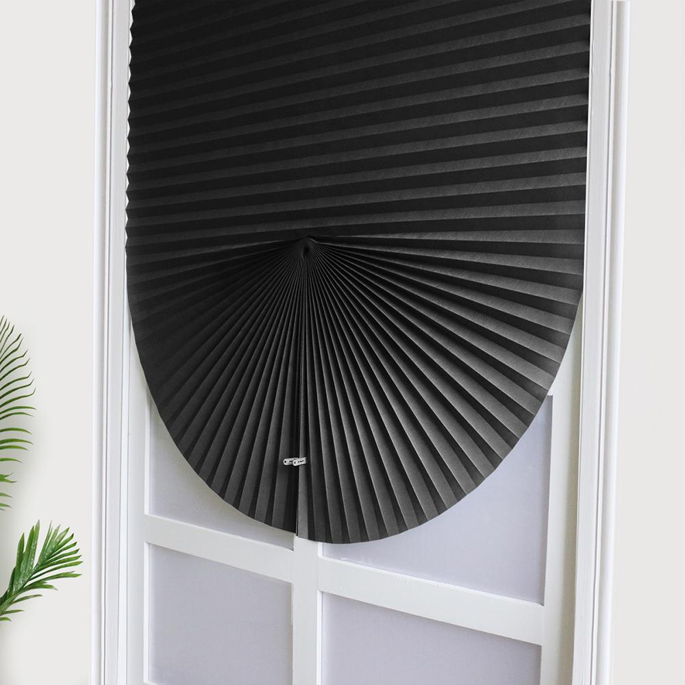

Шторы плиссе
Главная | День-ночь | Блэкаут | С фотопечатью | Плиссе | Жалюзи | Римские шторы | Шторы | Карнизы
В современной архитектуре, где доминируют панорамные конструкции и оригинальные формы окон, подбор средств защиты от солнца приобретает особую значимость. Шторы плиссе выступают передовым техническим решением, объединяющим минималистичный дизайн с широким спектром функций. Они обеспечивают точный контроль освещенности, не утяжеляя визуальное восприятие интерьера.
Технологические преимущества и конструктивные особенности
Конструктивно такие системы состоят из гофрированного материала, установленного на алюминиевую раму. Их ключевая сильная сторона — универсальность применения. В отличие от традиционных гардин или жалюзи, плиссе легко монтируются на окна любой конфигурации, включая арочные, трапециевидные и мансардные. Механизм фиксации позволяет останавливать полотно на произвольной высоте, что дает возможность закрывать только верхнюю или нижнюю часть проема, сохраняя приватность и доступ дневного света.
Материаловедение и эксплуатационные характеристики

При производстве современных систем плиссе используются специализированные ткани с антистатическим и пылеотталкивающим покрытием. Это существенно упрощает процесс ухода за изделиями и продлевает срок их службы в условиях интенсивной эксплуатации. Особое внимание уделяется светоотражающим свойствам материалов. Ткани с металлизированным напылением или эффектом «перламутр» эффективно отражают ультрафиолетовые лучи, предотвращая перегрев помещения в летний период и снижая нагрузку на системы кондиционирования.
Интеграция в деловой и жилой интерьер
С точки зрения дизайна, шторы плиссе являются воплощением минимализма. Отсутствие громоздких карнизов и избыточного декора позволяет им органично вписываться в строгие офисные пространства, переговорные комнаты и современные жилые апартаменты. Возможность выбора степени прозрачности полотна — от полупрозрачных вуалей до светонепроницаемых тканей типа «блэкаут» — позволяет создавать индивидуальные сценарии освещения. Внедрение систем автоматизации с дистанционным управлением дополнительно повышает уровень комфорта, позволяя интегрировать шторы в концепцию «умного дома».
Экономическая целесообразность выбора
Инвестиции в качественные системы плиссе оправданы их долговечностью и способностью сохранять первоначальный вид на протяжении многих лет. Благодаря компактности конструкции, такие шторы не загромождают подоконник, что является критически важным фактором для небольших помещений. Выбирая плиссе, владелец недвижимости получает не просто элемент декора, а надежный инструмент для контроля микроклимата, который подчеркивает статус интерьера и демонстрирует внимание к деталям.